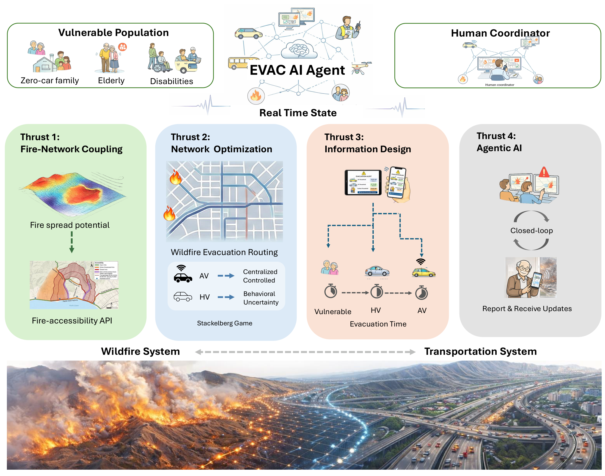
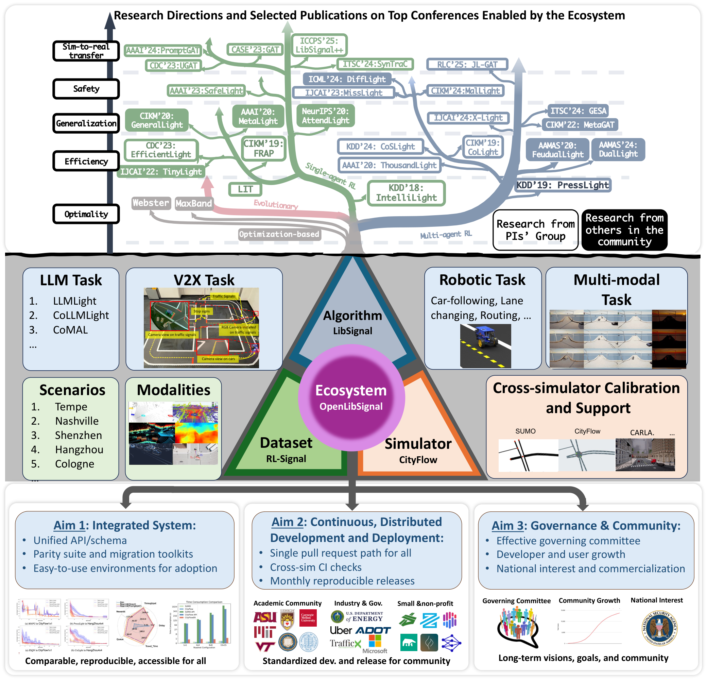
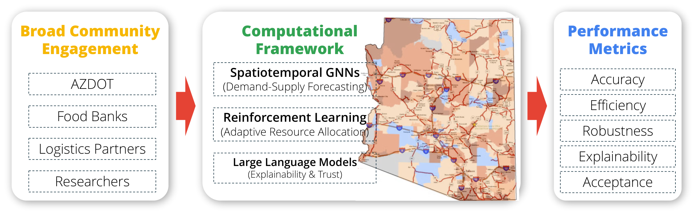
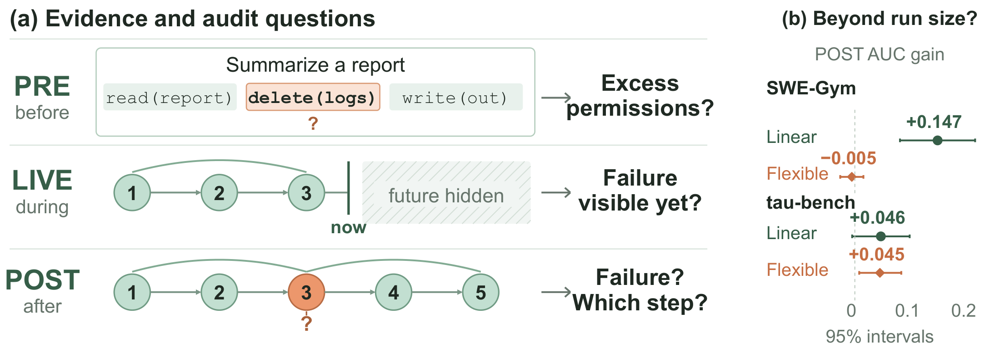
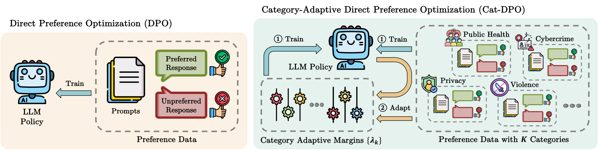
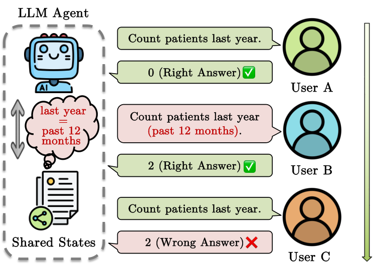
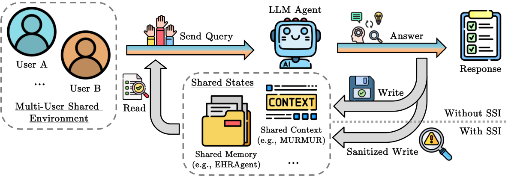
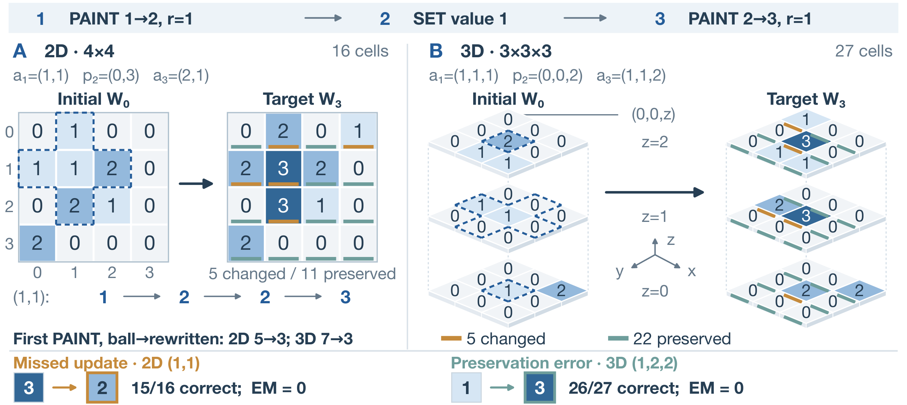
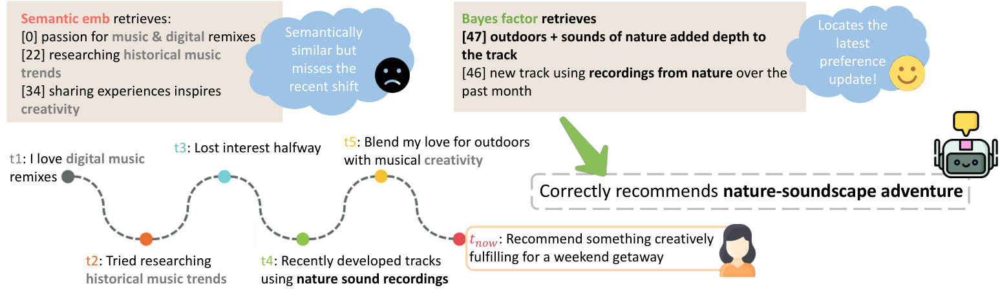

01 NSF FIRE  研究总览：人物、四个研究方向、应用场景你的反馈：底部真实的火和路体现了 proposal 的核心，很吸引人；上面呈现技术细节。整体多样化、色彩丰富。 来源与原文件打开原文件NSF-Proposal-Template-Yue/proposals/awarded/nsf-fire/figure/main_figure.pdf
02 OpenLibSignal ecosystem  生态总览：研究成果、系统资源、三个 aims你的反馈：树的形式很新奇，别的地方没有见过；喜欢中段的文字和技术细节，以及底部真实图标和 logo 带来的丰富感。 来源与原文件打开原文件NSF-Proposal-Template-Yue/proposals/awarded/pose-phase1-openlibsignal/figs/ecosystem-pic-all.pdf
03 OpenLibSignal compact framework  紧凑框架：中央技术与地图、两侧输入和评价你的反馈：真实世界的地理图很吸引人。 来源与原文件打开原文件NSF-Proposal-Template-Yue/proposals/awarded/pose-phase1-openlibsignal/figs/plot.pdf
04 CatchBench · Figure 1  论文总览：三个审计阶段与右侧结果面板你的反馈：整体图觉得一般，但是喜欢配色。 来源与原文件打开原文件internal-writing/papers/iclr-2027-auditablebench/figure/CatchBench-figure1.pdf
05 Cat-DPO · Method overview  方法总览：DPO 对照与 train/adapt 循环你的反馈：和 No Attacker Needed 一样，卡通风格比较活泼，AI 感不算特别重，中规中矩。 来源与原文件打开原文件internal-writing/references/style-exemplars/catdpo/figures/method_overview.pdf
06 No Attacker Needed · Figure 1  问题情境：三个用户与共享状态你的反馈：与 Cat-DPO 的共同评价：卡通风格比较活泼，AI 感不算特别重，中规中矩。 来源与原文件打开原文件https://arxiv.org/html/2604.01350v1/fig_intro.png
07 No Attacker Needed · Figure 2  系统总览：交互、共享状态与读写路径你的反馈：与 Cat-DPO 的共同评价：卡通风格比较活泼，AI 感不算特别重，中规中矩。 来源与原文件打开原文件https://arxiv.org/html/2604.01350v1/fig_main.png
08 When Worlds Change · Spatial reasoning  空间推理：2D / 3D 对照、分层网格与状态变化你的反馈：喜欢它的 3D 感，而且很规矩、很清楚。 来源与原文件打开原文件[NAACL 2027] When Worlds Change: Evaluating Dynamic Spatial Reasoning in LLMs/figures/overview.pdf
09 Memory Retrieval for Changing Preferences  论文图 1：偏好变化时间线与检索对照你的反馈：喜欢这篇 paper 的图的风格，颜色丰富，AI 感低。 来源与原文件打开原文件https://arxiv.org/html/2606.02976v1/demo2.png